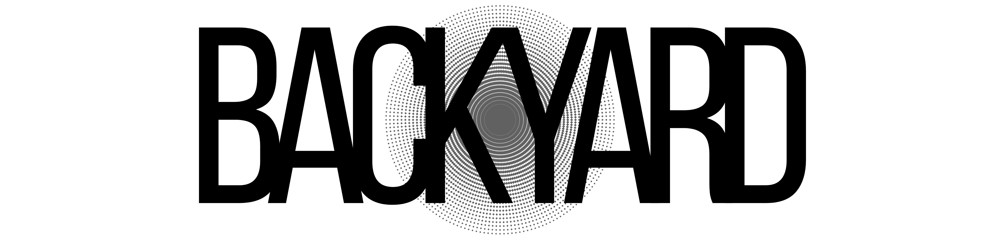

<footer class="site-footer">
  <div class="footer-inner">
    <div class="footer-subscribe-section">
      <div class="footer-subscribe-content">
        <p class="footer-subscribe-kicker">Dispatches &amp; Essays</p>
        <h4 class="footer-subscribe-title">Subscribe to Backyard</h4>
        <p class="footer-subscribe-desc">Cosmology, history of physics, sound orbits, and climate records sent straight to your reading list.</p>
      </div>
      <form class="footer-subscribe-form" action="https://substack.com/@backyardmagazine" method="get">
        <div class="footer-subscribe-row">
          <input 
            type="email" 
            name="email" 
            class="footer-subscribe-input" 
            placeholder="Enter your email address" 
            aria-label="Email address"
            required
          >
          <button type="submit" class="footer-subscribe-btn">Subscribe</button>
        </div>
      </form>
    </div>

    <div class="footer-bottom-row">
      
      <nav class="footer-links" aria-label="Footer navigation">
        <a href="about.html">About</a>
        <a href="index.html">Home</a>
        <a href="https://substack.com/@backyardmagazine" target="_blank" rel="noopener noreferrer">Substack</a>
        <a href="mailto:aviscusi11@gmail.com">Contact</a>
      </nav>
      <p class="footer-copy">2026 - Backyard</p>
    </div>
  </div>
</footer>
